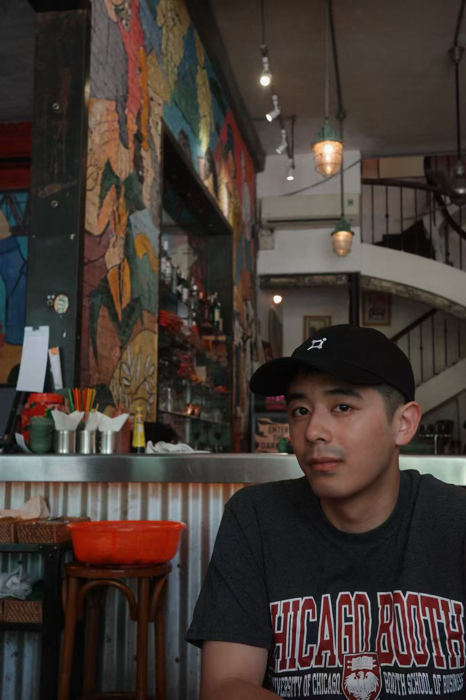

| 2026 – | Ph.D., College of Computing and Data Science, Nanyang Technological University |
| 2025 (Spring) | Visiting Student, University of California, Berkeley |
| 2022 – 2026 | B.A. in Economics, Elite Class, School of Business, Nanjing University |
| 2026 – | 博士，南洋理工大学 计算与数据科学学院 |
| 2025（春） | 访问学生，加州大学伯克利分校 |
| 2022 – 2026 | 经济学学士，南京大学 商学院精英班 |